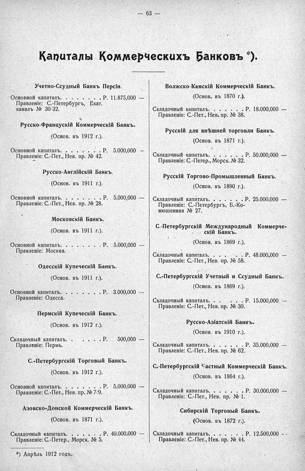

Лист источника 109
Скан

Распознанный текст
— 63 —
Капиталы Коммерческихъ Банковъ *).
Учетно-Ссудный Банкъ Персіи.
Основной капиталъ. . . . . . . Р. 11.875,000 —
Правленіе: С.-Петербургъ, Екат.
каналъ № 30/32.
Русско-Французскій Коммерческій Банкъ.
(Основ. въ 1912 г.).
Основной капиталъ. . . . . . . Р. 5.000,000 —
Правленіе: С.-Пет., Нев. пр. № 42.
Русско-Англійскій Банкъ.
(Основ. въ 1911 г.).
Основной капиталъ. . . . . . . Р. 5.000,000 —
Правленіе: С.-Пет., Нев. пр. № 28.
Московскій Банкъ.
(Основ. въ 1911 г.).
Основной капиталъ. . . . . . . Р. 5.000,000 —
Правленіе: Москва.
Одесскій Купеческій Банкъ.
(Основ. въ 1911 г.).
Основной капиталъ. . . . . . . Р. 3.000,000 —
Правленіе: Одесса.
Пермскій Купеческій Банкъ.
(Основ. въ 1912 г.).
Складочный капиталъ. . . . . Р. 500,000 —
Правленіе: Пермь.
С.-Петербургскій Торговый Банкъ.
(Основ. въ 1912 г.).
Основной капиталъ. . . . . . . Р. 5,000,000 —
Правленіе: С.-Пет., Нев. пр. № 7/9.
Азовско-Донской Коммерческій Банкъ.
(Основ. въ 1871 г.).
Складочный капиталъ. . . . . . Р. 40.000,000 —
Правленіе: С.-Петер., Морск. № 5.
*) Апрѣль 1912 годъ.
Волжско-Камскій Коммерческій Банкъ.
(Основ. въ 1870 г.).
Складочный капиталъ. . . . . . Р. 18.000,000 —
Правленіе: С.-Пет., Нев. пр. № 38.
Русскій для внѣшней торговли Банкъ.
(Основ. въ 1871 г.).
Складочный капиталъ. . . . . . Р. 50.000,000 —
Правленіе: С.-Петер., Морск. № 32.
Русскій Торгово-Промышленный Банкъ.
(Основ. въ 1890 г.).
Складочный капиталъ. . . . . . Р. 25.000,000 —
Правленіе: С.-Петербургъ, Б.-Ко-
нюшенная № 27.
С.-Петербургскій Международный Коммерче-
скій Банкъ.
(Основ. въ 1869 г.).
Складочный капиталъ. . . . . . Р. 48.000,000 —
Правленіе: С.-Пет., Нев. пр. № 58.
С.-Петербургскій Учетный и Ссудный Банкъ.
(Основ. въ 1869 г.).
Складочный капиталъ. . . . . . Р. 15.000,000 —
Правленіе: С.-Пет., Нев. пр. № 30.
Русско-Азіатскій Банкъ.
(Основ. въ 1910 г.).
Складочный капиталъ. . . . . . Р. 35.000,000 —
Правленіе: С.-Пет., Нев. пр. № 62.
С.-Петербургскій Частный Коммерческій Банкъ.
(Основ. въ 1864 г.).
Складочный капиталъ. . . . . . Р. 30.000,000 —
Правленіе: С.-Пет., Нев. пр. № 1.
Сибирскій Торговый Банкъ.
(Основ. въ 1872 г.).
Складочный капиталъ. . . . . . Р. 12.500,000 --
Правленіе: С.-Пет., Нев. пр. № 44.